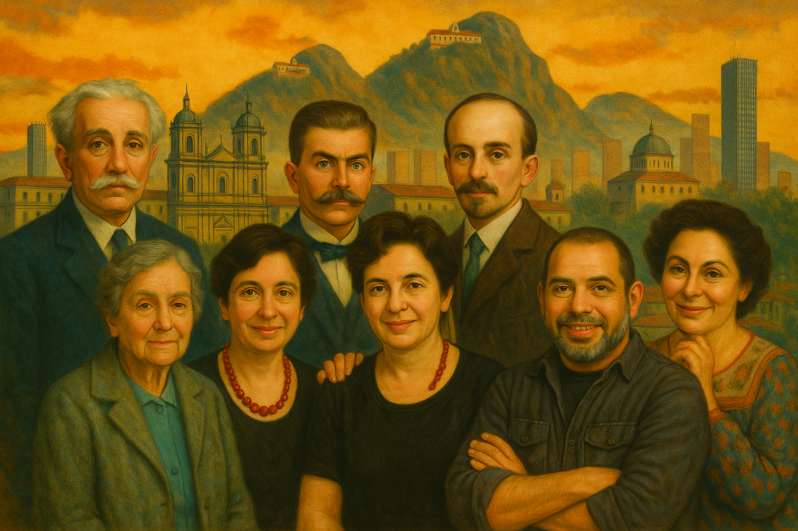

Cargando ecos...

Cada imagen, un instante. Cada rostro, una historia. Una colección de momentos que definieron el alma de Bogotá.
Haz clic en una imagen para explorar
Voces y rostros que forjaron la identidad de la capital.